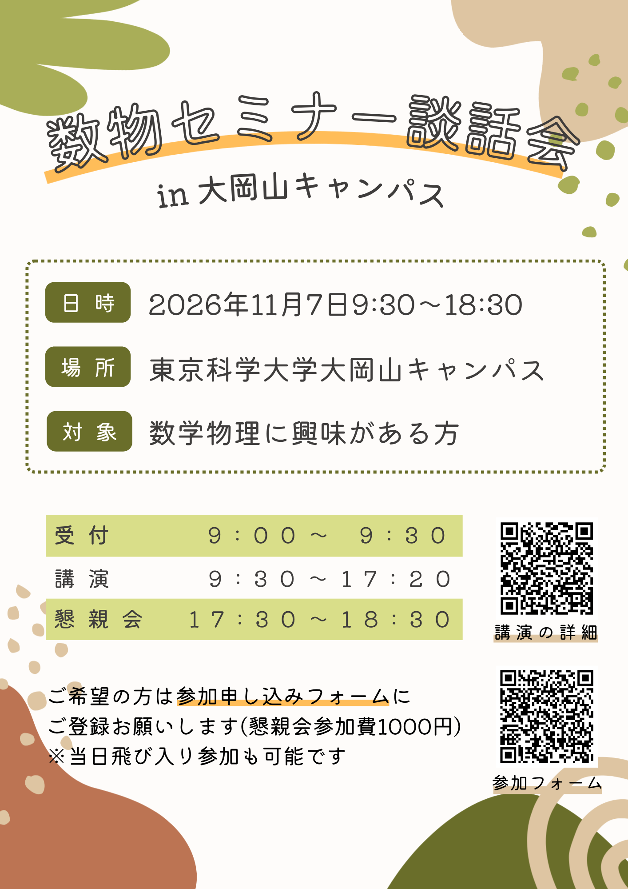

数物セミナー 大岡山談話会

概要
数物セミナーでは、数学・物理に関心に持つ学部生同士が、全国規模の合宿や談話会を通して大学・学年・分野の垣根を越え交流を行っています。 講演者による特別講演の他、ポスターセッションなどの講演者・参加者を交えての懇談の場を設けます。異分野・他大学の学生と交流する絶好の機会ですので、是非ふるってご参加ください。 これから専門を深めていく学部１・２年生や、既に学部を卒業された院生や社会人の方々の参加も大いに歓迎します。
日時
2026年 11月 7日 (土)
会場
東京科学大学大岡山キャンパス本館
※会場A・会場Bの教室はセキュリティの観点からdiscordでのみ告知します
受付場所・受付時間
受付:本館正面玄関
受付時間: 9:00 - 9:30
当日、本館は施錠されていますので、必ず以下の時間に受付場所にお越しください。それ以外の時間に来られる場合は運営までご連絡ください。
※9:00〜9:30
※昼休み中(12:25-14:10)
参加対象
数学・物理に興味がある方
参加方法
こちらのGoogle formから参加申し込みをお願いします。当日飛び入り参加される方も受付前に入力をお願いします。
大岡山談話会 参加申し込みフォーム
懇親会について
閉会式後、懇親会を行います。
懇親会参加費：1000円
※軽食や飲み物を用意する予定です
アクセス
東急目黒線・大井町線 大岡山駅南口から徒歩10分
当日の日程(予定)
| 2026年11月7日(土) | |||
|---|---|---|---|
| 時間 | 会場 | タイトル/要旨 | |
| 9:00 - | 受付開始 | ||
| 9:30 - 9:40 | 開会式 | - | |
| 9:40 - 10:25 | 講演 1 (会場A) |
Nehari manifold と符号変化解（発表者：うるま） 概要：半線形楕円型方程式を例に変分法を紹介する。Nehari manifold は、空間全体では鞍点となる臨界点を、適切な制約のもとで最小点として捉えるための道具である。本講演ではその性質と応用について述べる。 |
|
| 講演 1 (会場B) |
漸近理論とLAN（発表者：太田晃輔） 概要：数理統計のお話です。データ数が無限大になる極限で統計量の振る舞いを見ることで、推定・検定の良さを議論できることを紹介します。余裕があれば確率微分方程式の推定を例として説明します。 |
||
| 10:40 - 11:25 | 講演 2 (会場A) |
大域熱力学入門（発表者：SS） 概要：熱伝導系で熱力学を構築しましょう。大域的な熱力学量を導入し変分原理を仮定することによって予言される気液共存系での非自明な現象、及び理論の正当性の検証について紹介したいと思います。 |
|
| 講演 2 (会場B) |
直観主義論理入門（発表者：谷燈哉） 概要：直観主義論理は古典論理より証明能力が弱く「PまたはPでない」などが示せません。一見意味不明で不便そうですが、実はある意味で古典論理の上位互換になっており、多くの応用を持つ対象でもあります。 |
||
| 11:40 - 12:25 | 講演 3 (会場A) |
アクティブネマチック理論で記述する細胞集団の世界（発表者：齋藤諒人） 概要：細胞は自己駆動する構成要素として、非平衡系を形成します。では、細胞集団に現れるトポロジカル欠陥には、どんな現象が潜んでいるのでしょうか？理論と実験から、その不思議な世界を紹介します。 |
|
| 講演 3 (会場B) |
熱が繋ぐ、過去と未来の物語（リッチフロー編）（発表者：若林玄基） 概要：過去から学び、未来へ遺す。過去と未来を繋ぐのは貴方の役目ですが、リッチフローにおいてはある意味でその役目を熱方程式の解が果たします。本講演では、リッチフロー時空の幾何解析の方法を紹介します。 |
||
| 12:25 - 14:10 | 昼食休憩 | ||
| 14:10 - 14:55 | 講演 4 (会場A) |
ガロア接続〜言語に潜む随伴構造〜（発表者：上原史皓） 概要：言語は身近で、しかし不思議な対象です。実は言語の中にはガロア接続と呼ばれる随伴構造が潜んでいます。まずこれを解説し、ガロア接続を用いたLLMの解釈まで紹介します。 |
|
| 講演 4 (会場B) |
quiver varietyの構成（発表者：吉田壮太） 概要：quiver varietyがどのようにして構成されるか話す。まずGITやシンプレクティック幾何学について述べ、それをquiverの表現のなす空間に適用する。 |
||
| 15:10 - 15:55 | 講演 5 (会場A) |
微分幾何で見る電磁場（発表者：よる） 概要：物理学の様々な対象は、数学の一般的な枠組みの中で捉えることができる。本講演ではその一例として電磁場を取り上げ、微分幾何の概念を用いてMaxwell方程式が統一的に記述されることを見る。 |
|
| 講演 5 (会場B) |
整数係数多項式の周期性とcosの有理数性, そしてその先へ（発表者：t888（松本隼斗）） 概要：整数係数多項式の周期点の観点から数論力学系の話題を紹介する。Pólyaの定理を出発点にしてcosの有理数性という身近な問題へ進み、さらに近年の研究を紹介する。 |
||
| 16:10 - 16:55 | 講演 6 (会場A) |
Youngの畳み込み不等式の最良定数と等号成立条件（発表者：渡邉美怜） 概要：コーシーシュワルツの不等式に代表される関数不等式の理論は、現在も発展を続けています。本講演ではYoungの積分不等式に焦点を当て、その最良定数や最大化関数の性質について考察します。 |
|
| 講演 6 (会場B) |
現代制御理論と線形代数（発表者：菅井遼明） 概要：現代制御理論とは、微分方程式で表される入出力を持つシステムの構造や制御手法を調べる分野である。特に線形時不変システムに関して、線形代数的な手法がどのように使われるかを紹介する。 |
||
| 17:10 - 17:20 | 閉会式 | ||
| 17:30 - 18:30 | 懇親会 | ||